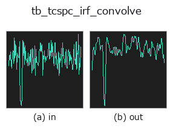

typed op• 数据种类:counts → counts
• 调用:fullseye.apply(img, "tb_tcspc_irf_convolve", a=0.5, b=0.5)(2-D 的模型是一张图 + 两个标量旋钮 a,b∈[0,1])

*图为在 128×128 合成输入上实际运行的输出。左为输入，右为输出。点云以俯视散点显示(亮度 = z)，一维序列为折线，体数据为沿 z 的最大值投影，视频为中间帧，复数图像为幅值；无法成像的返回值直接显示数值。*
扫描旋钮 a(0.1 / 0.5 / 0.9，另一旋钮取默认):
▸ tb_tcspc_irf_convolve: knob a sweep (docs site)
扫描旋钮 b(0.1 / 0.5 / 0.9，另一旋钮取默认):
▸ tb_tcspc_irf_convolve: knob b sweep (docs site)
阶段(前置算子 → 本算子，从左到右):
▸ tb_tcspc_irf_convolve: stages (docs site)
换别的图像(合成场景 / 照片 / 硬币。上排为输入，下排为对应输出。旋钮取默认):
▸ tb_tcspc_irf_convolve: other inputs (docs site)
用仪器响应（时序抖动）对到达时间直方图进行模糊处理。
> 以下的详细说明为原文 —— 摘要与标题已翻译。
The temporal analogue of a PSF convolution: a detector's timing uncertainty
(SPAD jitter + TDC quantisation + laser pulse width) smears every arrival
time by the instrument response function, here a Gaussian of full width at
half maximum *irf_fwhm_ps*. The kernel is the exact bin integral of that
Gaussian (erf differences), normalised to sum 1, truncated at
`+-truncate*sigma` and forced to odd length so the convolution is centred.
Ground truth: convolving a unit spike in the middle of a 256-bin window with
`irf_fwhm_ps = 500 at bin_ps = 50` leaves the centroid exactly
where it was (measured shift 0.0 ps — the kernel is symmetric) and gives a
profile whose measured FWHM is 501.22 ps. That 0.24% excess over 500 is the
*measurement*, not the kernel: :func:tcspc_stats finds the half-maximum
crossings by linear interpolation between bins, which slightly overestimates
the width of a Gaussian.
Total counts are preserved *except* at the window edges, where
`mode='same'` discards the tail that falls outside — measured loss exactly
0 for that centred spike, but a genuine loss for a pulse within a few sigma
of either end.
Returns a float64 1-D histogram of the same length as *hist*.
Raises `ValueError`: negative, non-finite or non-1-D *hist*, a
non-positive *bin_ps* / *irf_fwhm_ps* / *truncate*, an IRF sigma below
1e-3 bins (the kernel would be a delta and the op a no-op — say so instead
of pretending to blur), and a kernel that would be longer than the
:data:MAX_BINS cap.
Typed bridge of the photon op `tcspc_irf_convolve into the 2-D evolution registry: the same implementation, called under the op(v, a, b) convention. a drives bin_ps (default 100) and b drives irf_fwhm_ps` (default 200).
• 示例数据目录(下载 URL / 许可证) —— 2-D 用 skimage.data(BSD/公有领域)加合成图,3-D 给出真实数据源(Stanford/PDS 等)的下载 URL。
• 算子来历与参考文献 —— 该算子族所依据的研究/方法出处。
下面的程序已确认可以运行(与图相同的输入)。在 Studio 帮助中，此块会变成按钮，可当场加载并运行。
img_to_counts 0.50 0.50 tb_tcspc_irf_convolve 0.50 0.50
▸ Load this pipeline · Load & run
下面的示例调用的是底层账本算子 tcspc_irf_convolve。此桥接算子只是把同一实现适配为 fn(v, a, b) 约定，行为完全相同(只是调用形式不同)。
• photon_timeresolved — py -3.11 examples/photon_timeresolved.py
counts 作为输入)identity · tb_spad_deadtime_apply · tb_spad_deadtime_correct · tb_tcspc_coates_correct · tb_tcspc_background_subtract · tb_dtof_depth · tb_countrate_to_counts · tb_counts_to_countrate
typed)tb_points_to_voxel · tb_estimate_point_normals · tb_iss_keypoints · tb_angle_3points · tb_project_points · tb_render_point_depth · tb_statistical_outlier_removal · tb_radius_outlier_removal
*Provenance: ops.py — 2D 算子登记表。本条目由 tools/opdocs.py md 自动生成(请勿手工编辑)。*
© 2026 Kazufumi Furuse — Fullseye operator documentation. Licensed under Apache-2.0.
{kind=link}
{kind=link}
{kind=link}
{kind=link}